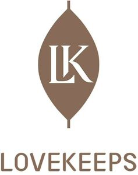

Trade Mark Journal No.2025/025 20 June 2025
WO0000001856946 (3,21,35)
Office of origin: China
Date of International Registration:18 February 2025
Date of designation in the UK:
18 February 2025

The mark contains the colour brown.
- Class 3
- Cleansing milk for toilet purposes; facial cleansers; essential oils; make-up; lipsticks; cosmetics; rouge; perfumes; make-up powder; eyebrow cosmetics.
- Class 21
- Make-up brushes; eyelash brushes; make-up removing appliances; cosmetic utensils; cheek brushes; toilet cases; eye shadow brushes; eyebrow brushes; make-up sponges.
- Class 35
- Marketing research in the fields of cosmetics, perfumery and beauty products; providing business information via global computer networks; organisation of exhibitions and events for commercial or advertising purposes; providing commercial information via the internet, the cable network or other forms of data transmission; providing commercial information and advice for consumers in the choice of products and services; marketing; provision of an online marketplace for buyers and sellers of goods and services; personnel management consultancy; administrative processing of purchase orders; retail services for pharmaceutical, veterinary and sanitary preparations and medical supplies.
Mao Geping Cosmetics Co., Ltd.
Representative: Chofn Intellectual Property, 1217, Zuoan Gongshe Plaza 12th Floor,, 68 North Fourth Ring Road W.,, Haidian, 100080 Beijing, CHINA